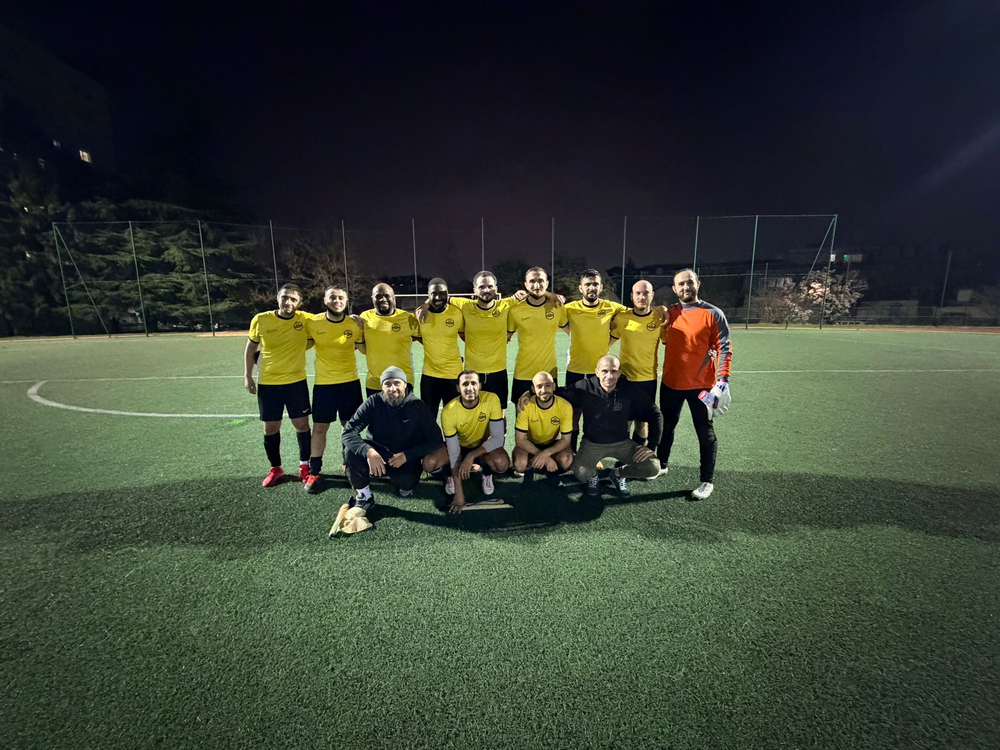
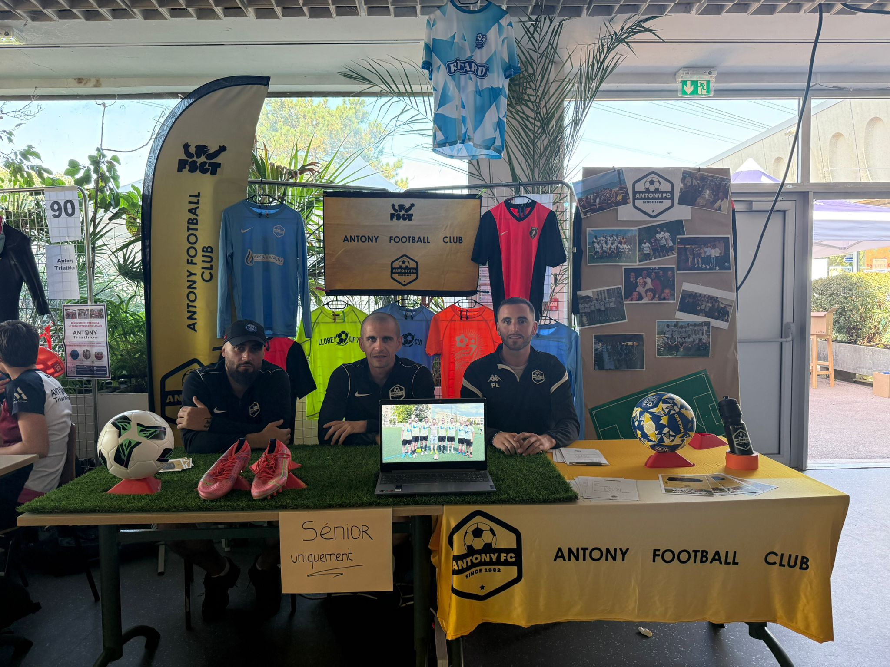
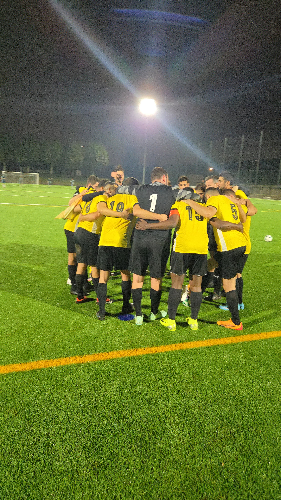
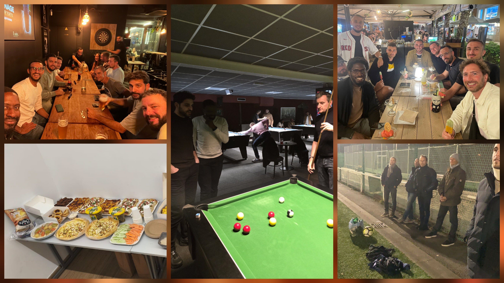
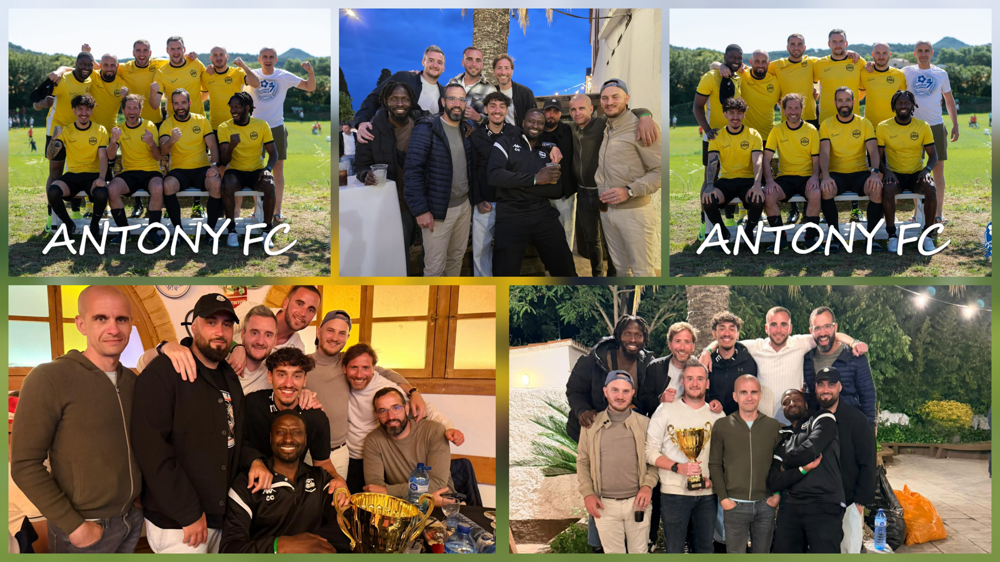
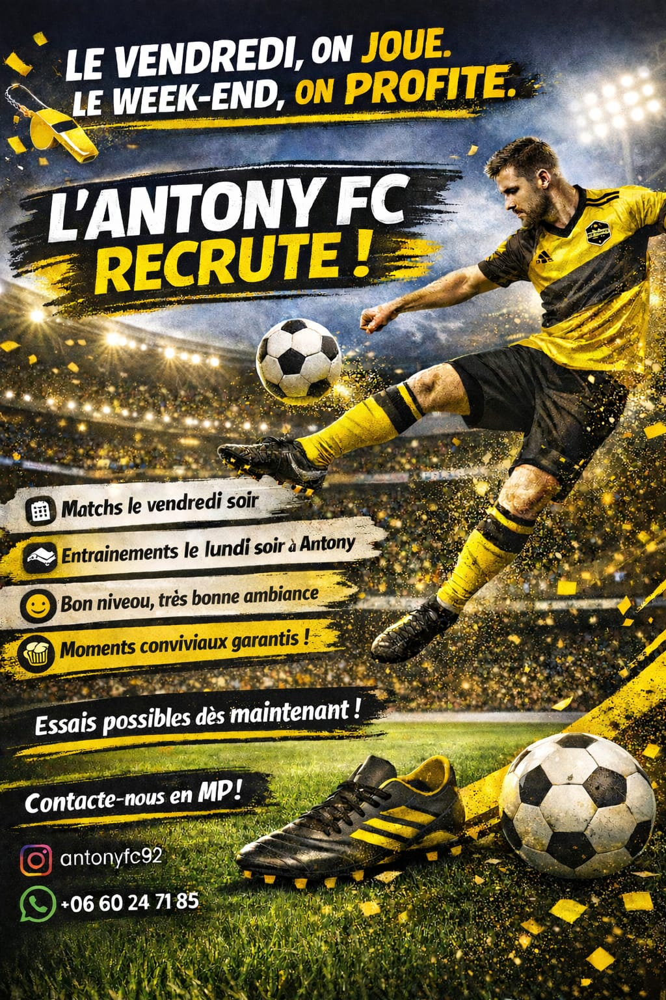
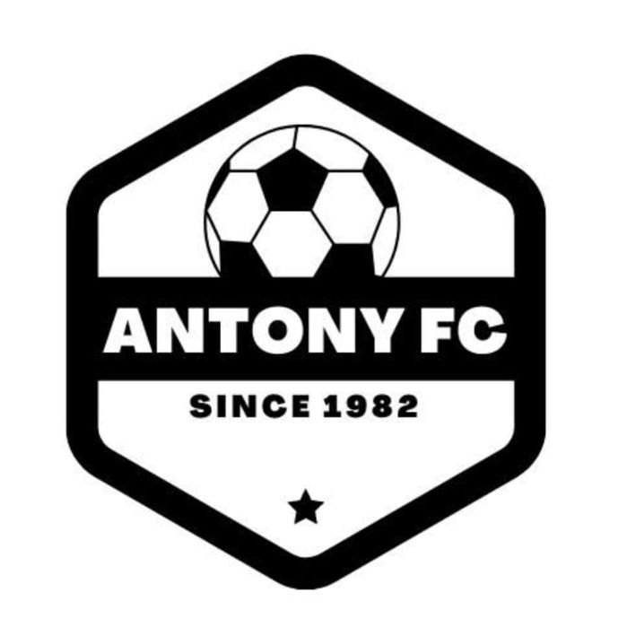
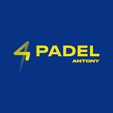

Convivialité
Plus qu'une équipe, un groupe soudé qui partage des moments sportifs et humains.
Club amateur • Antony • Senior masculin
Le football amateur autrement. Un club, une équipe, une passion.
Fondé en 1982, Antony FC est un club de football amateur ancré à Antony. Le club rassemble aujourd'hui une équipe senior masculine autour du plaisir de jouer, de la convivialité, du respect et de la solidarité.
Le club
Créé en 1982, Antony Football Club fait vivre un football amateur accessible et convivial au cœur de la ville. Le club défend un état d'esprit simple : prendre du plaisir à jouer, respecter le jeu et faire vivre un collectif soudé.
Porté par des bénévoles, Antony FC rassemble des joueurs de profils différents autour d'une même passion et d'une même envie de partager l'aventure sur et en dehors du terrain.
Plus qu'une équipe, un groupe soudé qui partage des moments sportifs et humains.
Le football comme plaisir avant tout, avec l'envie de progresser ensemble.
Respect des adversaires, des arbitres, des bénévoles et du maillot porté.
Un collectif où chacun compte, sur le terrain comme en dehors.
Une pratique sérieuse sans perdre l'essence du football amateur.
L'équipe
Antony FC évolue avec une équipe senior masculine engagée en compétition. Le groupe réunit des joueurs de générations et de parcours différents, rassemblés par le même état d'esprit.

Une équipe composée de joueurs passionnés, certains présents depuis plusieurs années, d'autres venus découvrir l'aventure Antony FC.
Galerie





Partenaires
Nos partenaires soutiennent le club au quotidien et participent à faire vivre notre projet sportif et humain à Antony.

La Ville d'Antony accompagne Antony FC avec une subvention de fonctionnement et la mise à disposition des installations sportives.

4PADEL Antony accompagne le club sur le tournoi et les soirées conviviales, en soutenant la dynamique du groupe.
Présence sur l'équipement du club et visibilité sur les supports du club.
Tournoi, manifestations du club et opérations ponctuelles.
Soutien annuel pour accompagner la saison et les projets du club.
Rejoindre le club
Antony FC recrute des joueurs seniors souhaitant rejoindre un groupe sérieux, convivial et ambitieux, avec une vraie place donnée à l'esprit collectif.
Contact